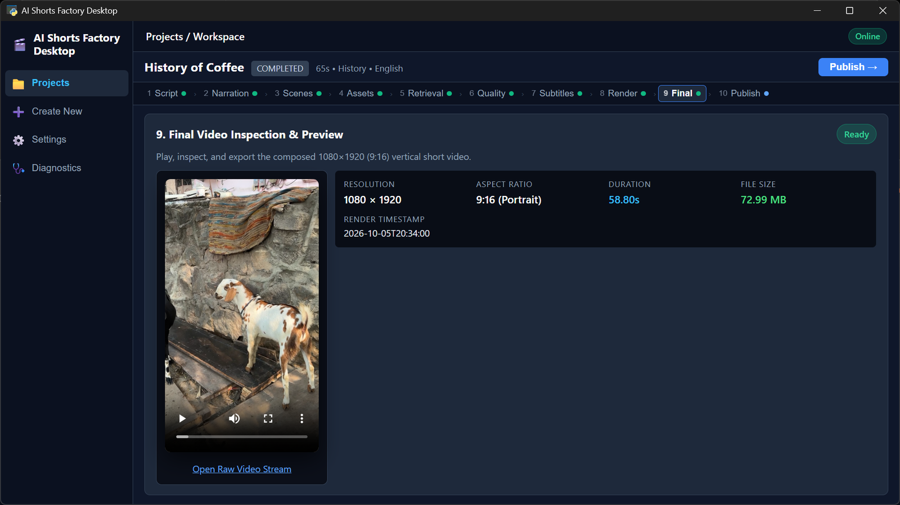
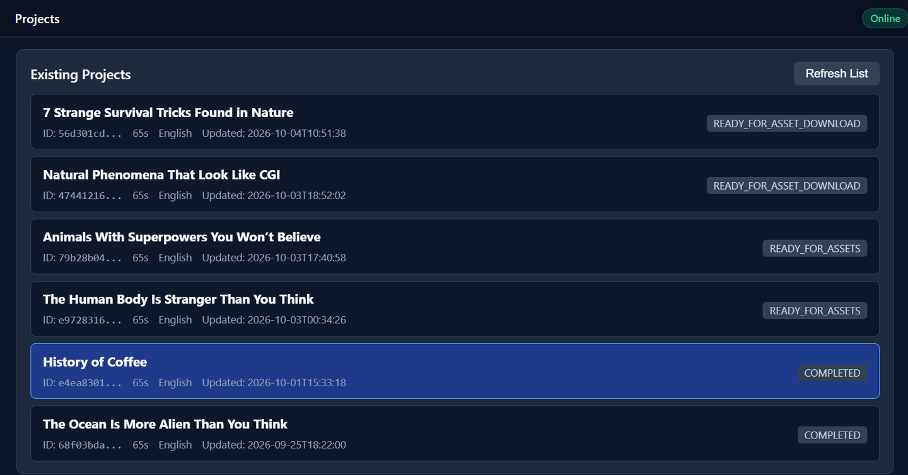
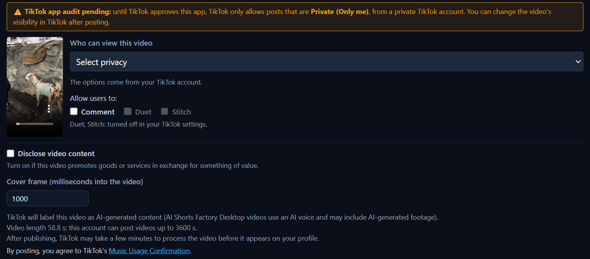

AI-assisted scripts
Drafts a short-form script for the chosen topic with an AI language model that runs on the creator's computer.
AI Shorts Factory Desktop
AI Shorts Factory Desktop is a Windows desktop application that helps creators produce vertical short-form videos using AI-assisted tools.
It is designed exclusively for educational, documentary, and informational videos (such as science, history, and geography topics) that creators publish to their own connected channels. It takes a video from script to a finished 1080 × 1920 MP4 on the creator's own computer, and the creator reviews the result before choosing where to publish it.

Purpose and content safety
Application purpose: AI Shorts Factory Desktop is a local Windows desktop tool designed exclusively to help creators produce educational, documentary, and informational short-form vertical videos (such as science, history, and geography topics) and publish them to their own connected social media channels.
Compliance with Google APIs Terms of Service: AI Shorts Factory Desktop strictly complies with the Google APIs Terms of Service and the YouTube Terms of Service.
Strict prohibition of AI NCII (AI-generated Non-Consensual Intimate Imagery): AI Shorts Factory Desktop does NOT generate, process, upload, or permit AI-generated Non-Consensual Intimate Imagery (AI NCII), sexually explicit content, nudity, non-consensual likeness/voice impersonation (deepfakes), harassment, or any harmful/deceptive content. It never uses Google APIs or any connected service for AI NCII.
The only Google APIs the application uses are YouTube API Services, to upload a video the creator rendered and reviewed to the creator's own YouTube channel and to show which channel is connected. See the Terms of Service and the Privacy Policy.
Capabilities
AI Shorts Factory Desktop helps creators produce short-form videos on their own computer.
Drafts a short-form script for the chosen topic with an AI language model that runs on the creator's computer.
Turns the script into narration with text-to-speech that runs locally.
Uses stock footage from Pexels and Pixabay, and can use AI-generated video clips for scenes.
Adds subtitles timed to the narration.
Renders the finished video as a 1080 × 1920 (9:16) MP4.
Publishes the finished video to YouTube Shorts, Facebook Page Reels and TikTok, when the creator chooses to.
Keeps each video as a project, so every stage can be checked and the final video reviewed before it is published.

Process
Every video moves through the same ten stages in the app.
The creator reviews the resulting video and its metadata before publishing. Nothing is published until the creator explicitly clicks Publish.
Destinations
When a video is ready, the creator chooses one or more destinations and clicks Publish. Publishing always requires this explicit action by the creator.
Uploads the video to the creator's YouTube channel after the creator connects their Google account.
Publishes the video as a Reel on a Facebook Page the creator manages, after the creator connects their Facebook account.
Login KitContent Posting APIDirect Post

Your data
AI Shorts Factory Desktop runs on the creator's Windows PC.
Projects and generated videos are stored locally on that PC.
Credentials for connected accounts are stored locally and encrypted using Windows DPAPI (Data Protection API).
Disconnecting an account in the app removes its stored credentials.
The app uses the internet to search for and download stock footage from Pexels and Pixabay, and to communicate with the platforms the creator connects and publishes to.
For details, read the Privacy Policy and the Terms of Service. AI Shorts Factory Desktop's use and transfer of information received from Google APIs adheres to the Google API Services User Data Policy, including the Limited Use requirements.
AI Shorts Factory Desktop currently provides controlled access. Creators may contact us to request access.
Contact: dvishuddhiya@yahoo.com